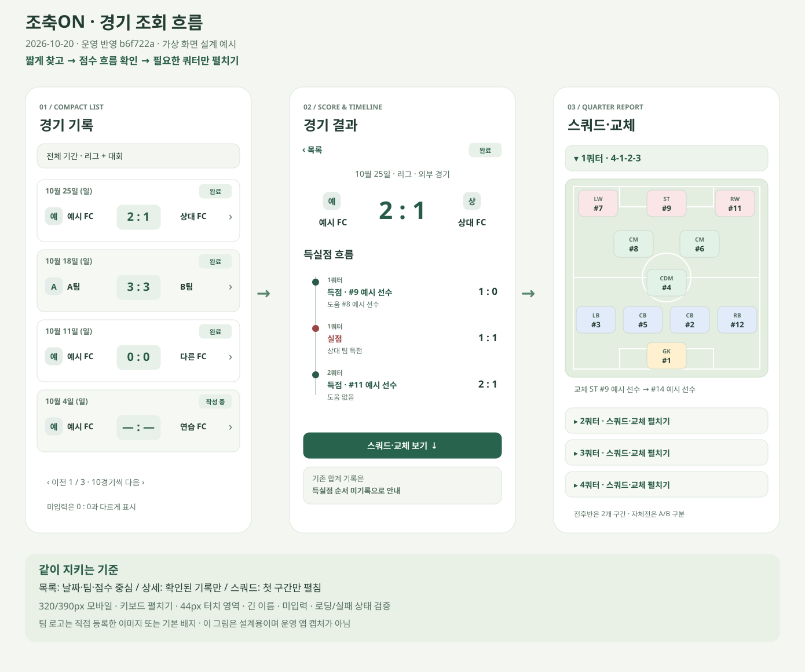

경기 목록 → 결과 → 쿼터별 스쿼드
2026-10-20 · 운영 반영 b6f722a · 모두 가상 팀과 선수. 운영 기능의 화면 흐름 예시이며 실제 운영 화면 캡처가 아닙니다.
목록에서는 날짜와 점수를 빠르게 확인합니다. 상세에서 확인된 득실점 순서를 보고, 첫 구간이 열린 스쿼드에서 필요한 쿼터만 추가로 펼칩니다. 기존 합계 기록의 득실점 순서는 추측하지 않습니다.
원본 SVG 크게 보기
팀 로고는 등록 이미지 또는 기본 배지를 사용합니다. 다른 서비스의 로고와 선수 사진을 사용하지 않았습니다.기능 명세·검증 기준 · UX 전문가 역할 정의